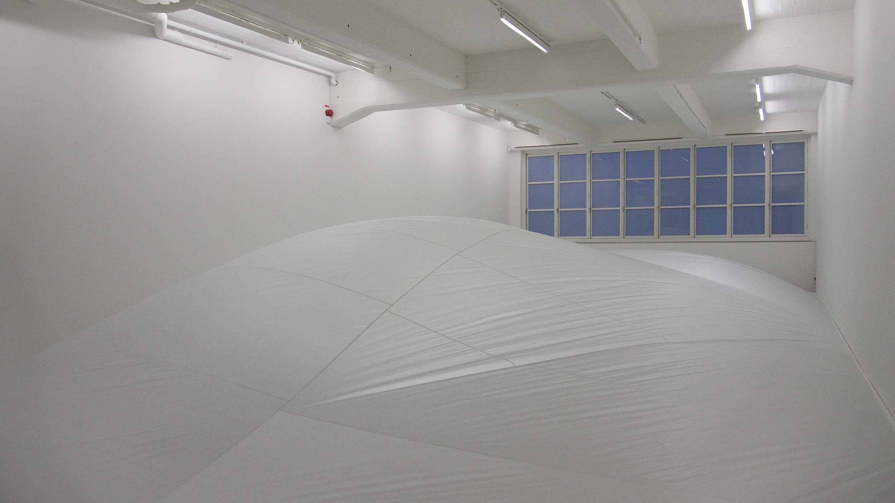
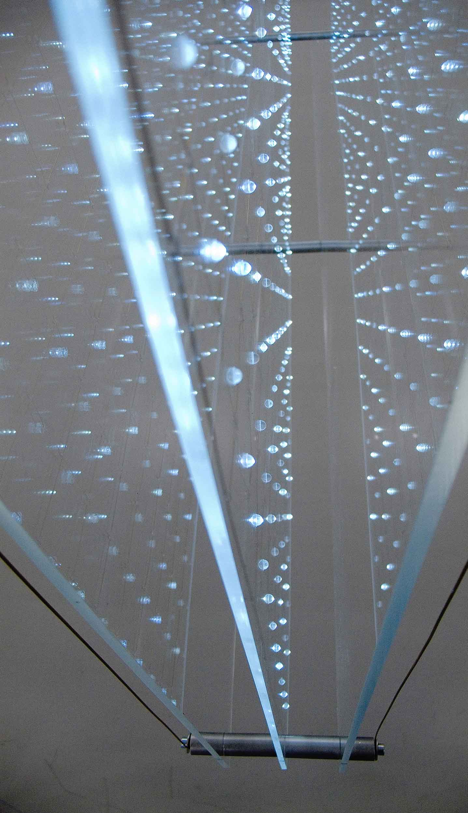
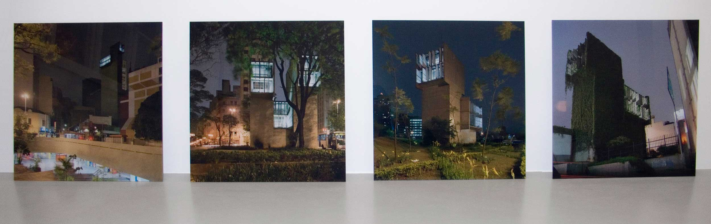

Stockholm
2007
Pneumatisk Landskap
The "Pneumatisk Landskap" installation was especially made for the higher end of the main exhibition space.
The architectural characteristics of the gallery space were used as a starting point for an installation which
changed the space radically.
The free formed floating "landscape" slowly changing its shape covered the whole space from wall to wall. It
was made of thin and very light white nylon fabric. Air pressure generated by the fan inside the installation
kept it in its shape. A timer system cut the fan off at intervals during which time it loosed some of its
volume. When the fan started again the installation slowly filled up to its full size and shape.
At day time the installation was illuminated by natural light coming from windows behind it. The windows were
covered with semi-transparent film to keep the background calm. The soft light filtering trough the windows
changed gradually during the day. In the evenings the "landscape" was illuminated by cool fluorescent light
coming from underneath it.

Mottagare
Another new installation, "Mottagare", was dividing the main room into two parts. The installation was made of 900 self-blinking white led-lights that formed a vertical 30x30 grid, sized 1,5 x 1,5 meters. The led-grid was mounted between transparent acrylic plates hanging in center of the space. The blinking sequence of each led differs slightly from others and together they create a randomly blinking matrix in which about 50% of the lights are on simultaneously. Human eye perceives the simultaneously blinking lights as patterns which constantly move across the matrix.

Lines and Circles
In the lower end of the main space were shown a series of graphic prints. The prints, 1.2 x 1.2 in size each, The series was studying the formation of moiré patterns in straight lines and circle shapes.
Variations On a Theme
In the project room of the gallery were on view for the first time a series of photographs produced as part of our project "Variations on a Theme" for "How to live together", 27th Sao Paulo Biennale in 2006. The images show brutalist concrete structures, all variations on same architectural theme, in their urban surroundings
